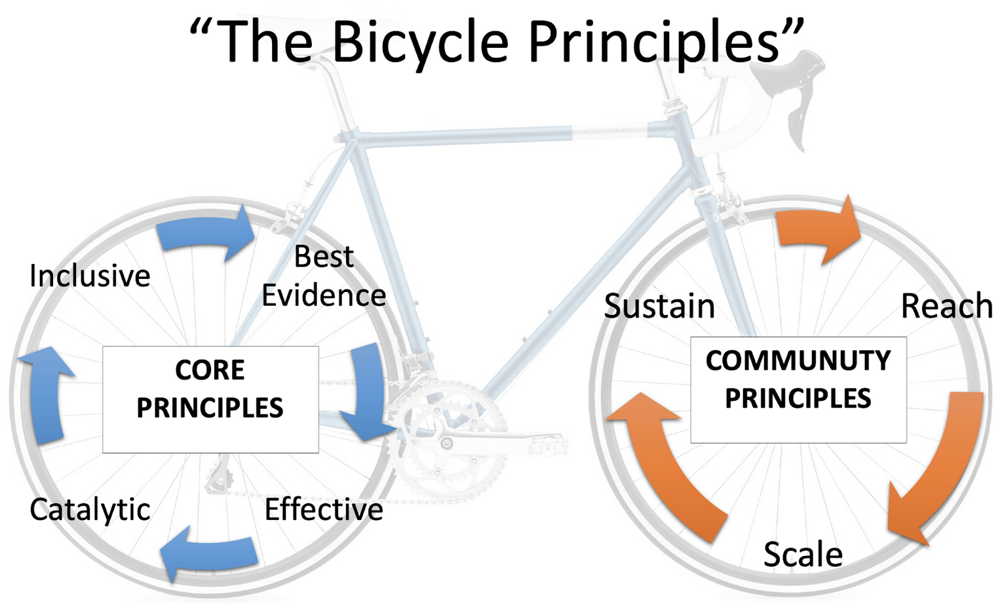

The Bicycle Principles for Effective, Inclusive, and Career-spanning Short-format Training
Improving Professional Development in the Life Sciences and Beyond
Announcement
March 2023
Preprint Available: A preprint summarizing the Bicycle Principles and recommendations is now available on bioRxiv:
Implementation Roadmap: We also have published a preprint on an implementation roadmap of the recommendations: Tractenberg RE, Williams J (2023) Roadmap for implementation of 14 Recommendations for career-spanning short format training in life sciences that is effective and accessible to all. doi:10.31235/osf.io/7d2yx.
Next Steps: This work is foundational to future of improving short-format training. Next steps will include hearing from the community on which recommendations they want to implement and obtaining the resources to do this. Add your name to the mailing list or comment in the discussion forum as we figure out how to do this together! Feedback, forum, and mailing list
Watch this video introduction to The Principles: Presented as a webinar by Australian Biocommons and Melbourne Genomics Health Alliance:
The need for a community-driven principle-based framework🚲
Life science is rapidly increasing in interdisciplinarity, making career-spanning learning critical. New methods and deeper research questions require scientists and educators to traverse widening skill gaps to remain competent.
STEM Careers and the Changing Skill Requirements of Work - Deming & Noray, NBER 20191
[O]ver time, new technologies replace the skills and tasks originally learned by older graduates, causing them to experience flatter wage growth and eventually exit the STEM workforce. Faster technological progress creates a greater sense of shortage, but it is the new STEM skills that are scarce, not the workers themselves.
[S]ince technological progress erodes the value of these skills over time, the long-run payoff to STEM majors is likely much smaller than short-run comparisons suggest. More generally, the labor market impact of rapid technological change depends critically on the extent to which schooling and “lifelong learning” can help build the skills of the next generation.
Short-format training (SFT) — including workshops, bootcamps, and short courses — is a solution many turn to. However, the effectiveness of short-format training is lower than many realize.
Null effects of boot camps and short-format training for PhD students in life sciences - Feldon et.al., PNAS 20172
To increase the effectiveness of graduate research training, many universities have introduced boot camps and bridge programs lasting several days to several weeks. National Science Foundation and National Institutes of Health currently support such interventions with nearly $28 million in active awards. Previous evidence for the efficacy of this format exists primarily in the form of anecdotes and end-of-course surveys. Here we show that participation in such short-format interventions is not associated with observable benefits related to skill development, scholarly productivity, or socialization into the academic community. Analyzing data from 294 PhD students in life sciences from 53 US institutions, we found no evidence of effectiveness across 115 variables. We conclude that boot camps and other short formats may not durably impact student outcomes.
Overall, short-format training is delivered without sufficient grounding in evidence-based pedagogy, and systemic inequity limits inclusion of all learners. Education sciences are clear on what should be done to optimize teaching for learning across age groups, but what is known about teaching and learning for adults — highly relevant for strengthening short-format training across the career span — is not typically brought to bear in short-format training. Rather than require all short-format training instructors to become well-versed in the cognitive and education sciences, an actionable framework that reflects these bodies of literature is needed.
The Bicycle Principles assemble education science and community experience into a framework for improving short-format training through two cyclic (hence "bi-cycle") and iterative processes.

The Bicycle Principles for short-format training🚲
Core Principles — apply to all short-format training:
All short-format training should...
-
Use Best Evidence; grounded in findings from the education sciences and formally evaluated instruction.
-
Be Effective; provide evidence (i.e., from assessment, evaluation) to learners that they have made progress in achieving programmatic and learning goals.
-
Be Inclusive; maximize the ability of all learners to participate in and benefit from the learning experience.
-
Promote Catalytic learning; prepare learners to succeed when the application of knowledge, skills, and abilities requires further self-directed study.
Community Principles — apply when short-format training is organized by communities (e.g., institutions, organizations, professional societies) to achieve their objectives:
Communities increase the impact of short-format by working to...
-
Reach: include new types and larger audiences of learners.
-
Scale: increase delivery of short-format training by new groups and larger numbers of instructors and instructional developers.
-
Sustain: work to maintain the availability, usability, relevance, and reliability of learning materials as well as supporting the supporting infrastructures, trainers, and communities which enable effective and inclusive training.
The Principles and this website🚲
Use The Principles as a roadmap to improved short-format training
We believe improving short-format training enables learners to pursue the most impactful science and achieve their personal career goals.
The Principles formalize effective practices and recognize the need for short-format training to be inclusive, equitable, and career-spanning.
Applying The Principles to short-format training could accelerate scientific progress while broadening participation.
Describe and prioritize recommendations that implement The Principles
The Banbury Working Group (described below) developed an initial set of 14 recommendations that can be used to implement The Principles. Each recommendation describes benefits to learners, incentives for implementers, and barriers to implementation. An anonymous survey asks stakeholders to comment on and rate recommendations and their features.
Promote community to support implementation
We hope to attract a diverse group of stakeholders with experience relevant to instruction (short-format and otherwise). Our efforts will draw on educational research, the experience and needs of the global community, as well as a diversity of disciplines, career stages, career paths, and cultural contexts. The feedback forum and mailing list are two additional ways we invite everyone to participate.
We strive to include new groups in implementing, adapting, and adopting existing and future recommendations that support The Principles. Building community and community of practice around The Principles could ensure the recommendations move from theory to adoption.
Banbury Working Group🚲
This work is the effort of an interdisciplinary and international team, organized through a conference at the Cold Spring Harbor Laboratory Banbury Center by project investigators Jason Williams (CSHL) and Rochelle Tractenberg (Georgetown University).
Project Participants
| Participant | Institution/Organization |
|---|---|
| Bérénice Batut* | University of Freiburg |
| Erin Becker | The Carpentries |
| Anne Brown | Virginia Tech |
| Melissa Burke | Australian BioCommons/ QCIF and RCC at the University of Queensland |
| Ben Busby | DNAnexus |
| April Clyburne-Sherin | Reproducibility for Everyone |
| Nisha Cooch | CureComms Advisors, LLC |
| Allissa Dillman | Office of Data Science Strategy, National Institutes of Health (NIH) |
| Sam Donovan* | BioQUEST Curriculum Consortium |
| Maria Doyle | Peter MacCallum Cancer Centre |
| Jessica Guo | University of Arizona |
| Christina Hall | Australian BioCommons, The University of Melbourne |
| Kate Hertweck | Chan Zuckerberg Initiative |
| Kari Jordan* | The Carpentries |
| John R. Jungck | University of Delaware |
| Charla Lambert* | Cold Spring Harbor Laboratory |
| Ainsley Latour | IDEA-STEM |
| Jessica Lindvall | ELIXIR-SE |
| Marta Lloret Llinares | European Molecular Biology Laboratory - European Bioinformatics Institute |
| Gary McDowell | Lightoller LLC |
| Rana Morris | National Center for Biotechnology Information, NLM, NIH |
| Teresa Mourad* | Ecological Society of America |
| Amy Nisselle | Melbourne Genomics Health Alliance; The University of Melbourne |
| Patricia Ordóñez | University of Puerto Rico, Río Piedras |
| Lisanna Paladin | The European Molecular Biology Laboratory (EMBL) Heidelberg |
| Patricia Palagi | SIB Swiss Institute of Bioinformatics |
| Mahadeo Sukhai | Canadian National Institute for the Blind |
| Tracy Teal* | RStudio |
| Rochelle Tractenberg** | Georgetown University |
| Celia van Gelder* | Dutch Techcentre for Life Sciences |
| Jason Williams** | Cold Spring Harbor Laboratory DNA Learning Center |
| Lou Woodley | Center for Scientific Collaboration and Community Engagement (CSCCE) |
*Organizing committee; ** Project PIs
Contact: Jason Williams (williams at cshl.edu)
Citations and publications🚲
-
Website Citation: Jason Williams, Rochelle Tractenberg, Bérénice Batut, Erin Becker, Anne Brown, Melissa Burke, Ben Busby, April Clyburne-Sherin, Nisha Cooch, Allissa Dillman, Sam Donovan, Maria Doyle, Jessica Guo, Christina Hall, Kate Hertweck, Kari Jordan, John R. Jungck, Charla Lambert, Ainsley Latour, … Lou Woodley. (2022). The Bicycle Principles (Website): Zenodo Archive. Zenodo. https://doi.org/10.5281/zenodo.6826816.
-
Preprints:
-
Optimizing Short-format Training: an International Consensus on Effective, Inclusive, and Career-spanning Professional Development in the Life Sciences and Beyond: Optimizing Short-format Training: an International Consensus on Effective, Inclusive, and Career-spanning Professional Development in the Life Sciences and Beyond Jason J. Williams, Rochelle E. Tractenberg, Bérénice Batut, Erin A. Becker, Anne M. Brown, Melissa L. Burke, Ben Busby, Nisha K. Cooch, Allissa A. Dillman, Samuel S. Donovan, Maria A. Doyle, Celia W.G. van Gelder, Christina R. Hall, Kate L. Hertweck, Kari L. Jordan, John R. Jungck, Ainsley R. Latour, Jessica M. Lindvall, Marta Lloret-Llinares, Gary S. McDowell, Rana Morris, Teresa Mourad, Amy Nisselle, Patricia Ordóñez, Lisanna Paladin, Patricia M. Palagi, Mahadeo A. Sukhai, Tracy K. Teal, Louise Woodley bioRxiv 2023.03.10.531570; doi: https://doi.org/10.1101/2023.03.10.531570.
-
Implementation Roadmap: Tractenberg RE, Williams J (2023) Roadmap for implementation of 14 Recommendations for career-spanning short format training in life sciences that is effective and accessible to all. doi:10.31235/osf.io/7d2yx.
-
Funding🚲
This material is based upon work supported by the National Science Foundation under DRL/EHR:2027025. Any opinions, findings, and conclusions or recommendations expressed in this material are those of the author(s) and do not necessarily reflect the views of the National Science Foundation.

This work is licensed under a Creative Commons Attribution 4.0 International License.
-
Deming, D. J., & Kadeem, N. L. (2019). STEM Careers and the Changing Skill Requirements of Work (Working Paper 25065). Retrieved from http://www.nber.org/papers/w25065 ↩
-
Feldon, D. F., Jeong, S., Peugh, J., Roksa, J., Maahs-Fladung, C., Shenoy, A., & Oliva, M. (2017). Null effects of boot camps and short-format training for PhD students in life sciences. Proceedings of the National Academy of Sciences, 114(37), 9854-9858. doi:10.1073/pnas.1705783114 ↩